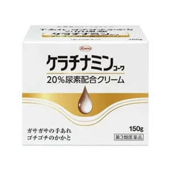

傷もひび割れも無く、ざらざらするだけの人

ケラチナミンコーワ
20%尿素配合クリーム
150g
¥1,273税込・出典掲載価格
選び方と声
- 選ぶ条件：傷やひび割れが無く、かたくなったかかとがざらつく人。メーカーの説明では尿素を20%配合。第3類医薬品なので、用法・用量と使用上の注意を読んでから
- 傷口・ひび割れた所・かさぶた・炎症のある所には使わない（メーカーの注意）。尿素はひび割れにしみることがあるとも、興和のページにある
気になる声気になる点：2週間使ってよくならないときは使用をやめて相談（メーカーの注意）。傷があるときはワセリンなど別の物を
販売価格・容量・送料はリンク先でご確認ください